BUT R&T — 1ère Année — 2026
Architecture Réseau
| VLAN | Nom | Sous-réseau | Attribution | Description |
|---|---|---|---|---|
| 10 | FIN_NET | 192.168.10.0/24 |
DHCP | Finance — Isolation inter-VLAN par ACL. Accès Internet restreint aux passerelles bancaires. |
| 20 | HR_STAFF | 192.168.20.0/24 |
DHCP | RH & Wi-Fi Interne — Accès contrôlé vers l'annuaire Active Directory. |
| 30 | TECH_NET | 192.168.30.0/24 |
Statique | Zone Serveurs & SOC — Cœur SI. Administration SSH interdite hors zone. |
| 40 | WIFI_GUEST | 192.168.40.0/24 |
DHCP | Clients Showroom — Internet-Only. Isolation L2 stricte inter-clients. |
Cabinet JJM
Projet SAÉ 2.04 — Conception et Déploiement d'une Infrastructure Réseau et Système Sécurisée — Société Patapied
Pour accompagner le déploiement du nouveau siège social de la société Patapied, la mise en place d'un système de gestion unifiée des identités et des accès était une priorité critique. Notre choix s'est porté sur un contrôleur de domaine sous Windows Server 2022 afin de structurer l'annuaire de l'entreprise, de centraliser l'authentification et de manager le parc de machines de manière centralisée.
Au tout début du projet, notre équipe avait opté pour une approche modulaire et open-source : le service DHCP avait été intégralement configuré et mis en production sur notre serveur Linux Debian. L'objectif d'origine était d'isoler les rôles réseau et de ne pas surcharger le contrôleur de domaine Windows.
Cependant, lors de la phase de qualification et de raccordement des premiers postes clients, nous avons été confrontés à une barrière d'interopérabilité majeure : le couplage entre l'attribution d'adresses IP et la mise à jour dynamique du DNS (DDNS). Les machines clientes du domaine (notamment les postes Windows) recevaient bien une configuration IP de la part de la Debian, mais leurs noms d'hotes ne s'enregistraient pas au sein de la zone DNS gérée par Active Directory. Cela provoquait des ruptures de résolution de noms, empêchant les machines de localiser correctement le contrôleur de domaine.
Après plusieurs tentatives infructueuses de scripts d'interopérabilité et de clés de mise à jour sécurisée (TSIG) entre ISC-DHCP-Server (Debian) et le DNS Microsoft, nous avons pris une décision d'ingénierie pragmatique et stratégique : abandonner le DHCP sur la Debian pour centraliser l'intégralité des étendues d'adressage directement sur le serveur Windows Server 2022. Ce pivot architectural a immédiatement fluidifié les opérations en permettant au rôle DHCP Microsoft de mettre à jour nativement, de manière dynamique et hautement sécurisée, les pointeurs DNS de l'Active Directory. Ce choix a grandement simplifié la supervision du réseau et consolidé la robustesse du domaine patapied.local.
Avant d'initier la promotion du serveur en tant que contrôleur de domaine, l'ancrage réseau de la machine devait être parfait. Nous lui avons attribué l'adresse fixe 192.168.30.20 sur le sous-réseau d'infrastructure et l'avons nommé SRV-AD-PATAPIED.
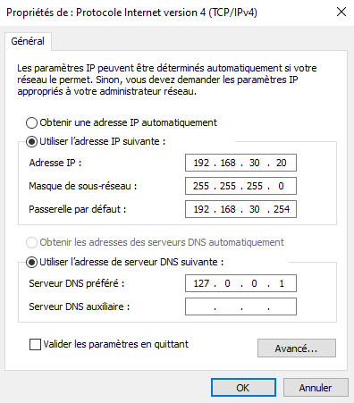
Figure 1 : Configuration réseau statique du contrôleur de domaine
Cette image valide la couche réseau fondamentale de notre contrôleur de domaine Windows. On y observe la fixation de son adresse IP statique (192.168.30.20), de son masque en classe C ainsi que de sa passerelle par défaut. La configuration du DNS préféré sur la boucle locale (127.0.0.1) prouve l'autonomie du serveur, qui doit impérativement interroger ses propres services pour résoudre les requêtes de l'annuaire Active Directory.
Une fois le rôle AD-DS promu, nous avons conçu une arborescence d'Unités Organisationnelles (UO) pour coller au cahier des charges de Patapied et préparer l'application de règles de sécurité ciblées.
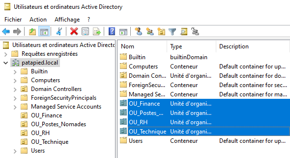
Figure 2 : Segmentation de l'annuaire via les Unités Organisationnelles (UO)
La console dsa.msc atteste de la bonne mise en place de notre gouvernance d'annuaire. À la racine du domaine patapied.local, les quatre UO cibles requises par le client sont isolées et prêtes à l'emploi : OU_Finance, OU_Postes_Nomades, OU_RH, et OU_Technique. Ce cloisonnement logique permettra d'appliquer des objets de stratégie de groupe (GPO) distincts par département métier.
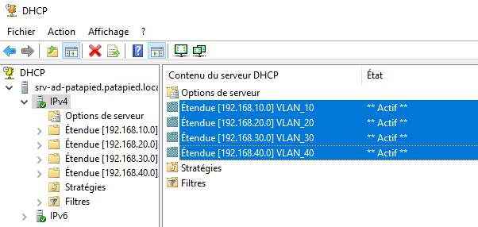
Figure 3 : Console DHCP Windows et segmentation des étendues par VLAN
Cette capture d'écran confirme l'activation complète du service DHCP centralisé sous Windows. Les quatre étendues correspondant à nos sous-réseaux logiques (VLAN_10, VLAN_20, VLAN_30 et VLAN_40) affichent toutes le statut Actif. Le serveur gère désormais la distribution des baux IP pour l'ensemble de la société.
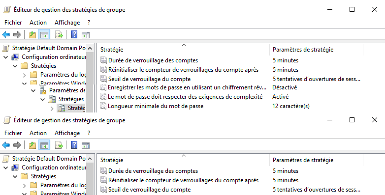
Figure 4 : Éditeur de stratégie du domaine (Default Domain Policy)
Cette capture d'écran de l'éditeur de GPO montre les paramètres de sécurité appliqués. On y distingue clairement l'activation des exigences de complexité des mots de passe, la fixation de la longueur minimale à 12 caractères, ainsi que la configuration du verrouillage des comptes configuré à 5 tentatives d'ouverture de session incorrectes pendant une durée de 5 minutes.
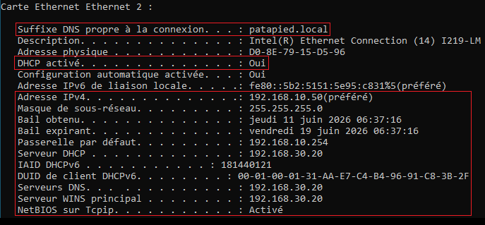
Figure 5 : Analyse du bail réseau obtenu sous Windows Client via ipconfig
Le diagnostic ipconfig /all exécuté sur le client confirme le succès de l'architecture. La machine a bien reçu le suffixe DNS patapied.local et s'est vu attribuer l'adresse IP 192.168.10.50. On constate surtout que la ligne "Serveur DHCP" identifie formellement notre contrôleur de domaine (192.168.30.20), validant la traversée des routeurs via l'agent de relais.
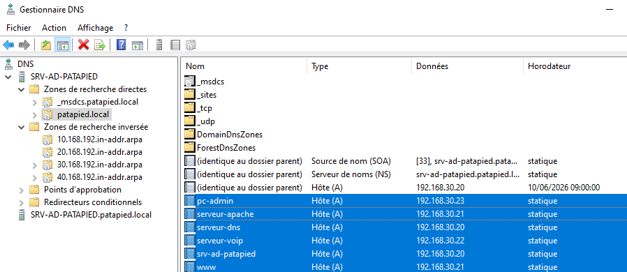
Figure 6 : Table des enregistrements d'hôtes (A) de la zone patapied.local
Cette vue du Gestionnaire DNS détaille notre table de résolution de noms statique. Tous les serveurs de production sont correctement indexés : serveur-apache (192.168.30.21), serveur-voip (192.168.30.22), et pc-admin (192.168.30.23). L'alias www pointe également sur l'IP du serveur Apache, permettant aux utilisateurs d'atteindre le site e-commerce de manière transparente.
Le routeur d'entreprise Cisco C8200L constitue le pivot central de la couche 3 (Réseau) de la société Patapied. Son rôle est double : orchestrer l'acheminement des paquets entre les zones logiques segmentées (Routage Inter-VLAN) et assurer la liaison montante sécurisée vers le pare-feu Stormshield Network Security pour l'accès périmétrique externe.
Afin de rationaliser l'usage des interfaces physiques et de s'aligner sur la segmentation par VLAN opérée au niveau de la couche 2, la méthode de troncature 802.1Q (Router-on-a-Stick) a été implémentée sur l'interface principale GigabitEthernet0/0/0.
Chaque sous-interface encapsule explicitement les balises (tags) issues des trames du switch d'accès et se voit attribuer la dernière adresse IP utile du segment (adresse .254) :
Pour résoudre la rupture logique liée au blocage des messages de broadcast par le routeur, l'agent de relais DHCP Helper a été déployé. Les directives ip helper-address 192.168.30.20 ont été injectées au cœur des sous-interfaces d'accès (Gi0/0/0.10, Gi0/0/0.20 et Gi0/0/0.40). Le routeur intercepte ainsi les messages de découverte DHCP locaux, les encapsule dans des paquets unicast de couche 3, et les redirige directement vers l'adresse IP du serveur Windows.
Le commutateur d'accès constitue le point d'entrée physique de l'icombatibilité du parc de Patapied. Notre stratégie de durcissement vise à neutraliser les attaques de couche basse (Layer 2) courantes : l'usurpation de service réseau via un serveur DHCP frauduleux (Rogue DHCP) et la saturation de la table d'adresses MAC.
Pour contrer les risques liés aux attaques de type Rogue DHCP Server, le DHCP Snooping a été implémenté à l'échelle du commutateur. Les ports d'infrastructure stratégiques (Cisco R1, AP Wifi, zone serveurs) sont configurés en mode Trusted, tandis que les ports utilisateurs d'accès restent en mode Untrusted, bloquant l'injection de trames DHCP manipulatrices.
L'intégration de la borne Wi-Fi sans fil (D-Link DAP-2020) configurée en mode **Access Point** a mis en avant des limites matérielles d'interopérabilité importantes :
La parade de couche 2 : Pour contourner ce verrou, l'interface du switch Cisco associée (Gi1/0/2) a été basculée d'un lien Trunk à un port d'accès forcé dans le VLAN 20, déléguant au switch l'encapsulation logicielle.
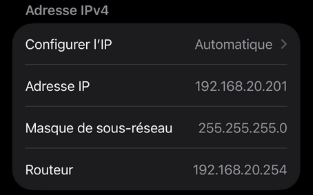
Figure 7 : Paramètres IP attribués dynamiquement en WiFi (192.168.20.201)
Toutes les phases d'initialisation des composants de la stack LAMP ont été exécutées sur notre instance Debian d'infrastructure (192.168.30.21).
Le choix d'ingénierie s'est porté sur **MariaDB** face à MySQL pour garantir un environnement 100 % libre, conforme nativement aux dépôts de Debian Bookworm, et doté de moteurs d'optimisation de requêtes transactionnelles plus véloces.
Afin de mettre en place une politique de sécurité industrielle filtrée, nous avons opéré un transfert complet du mécanisme de masquage réseau du routeur vers un pare-feu physique **Stormshield Network Security (SNS)**.
L'interconnexion s'effectue via une liaison d'adressage étanche configurée sur un masque de réseau strict en 10.0.0.0/30.
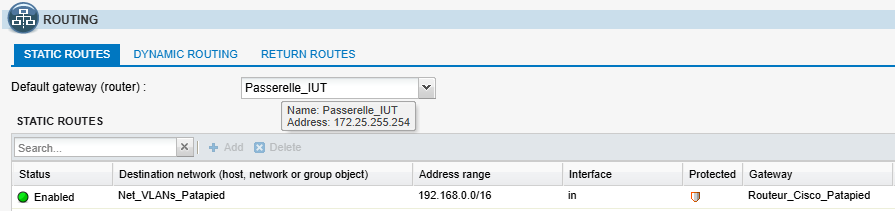
Figure 8 : Table des directions d'interconnexion statiques (Passerelle IUT & Retour Cisco)
En raison de l'impossibilité logicielle d'installer la surcouche graphique XiVO sur la maquette d'architecture, **100 % de l'infrastructure Asterisk a été configurée manuellement via l'éditeur Nano** au sein des fichiers textuels du dossier /etc/asterisk/.
Face à un conflit d'écoute asynchrone des sockets qui bloquait le combiné 102 en timeout, l'architecture a opéré une transition complète vers le protocole moderne **PJSIP**, nettoyant le fichier historique sip.conf au profit de structures de baux explicites.
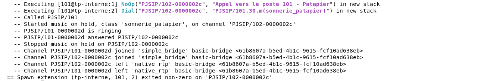
Figure 9 : Logs d'activité de la console Asterisk (CLI) lors du traitement d'un appel interne
The Patapied company required a local telephony solution capable of interconnecting workstations without relying on traditional telecom operator lines. The engineering choice landed exclusively on Asterisk, hosted on the same Debian Linux instance as the company's other corporate services.
Due to local staging matrix restrictions, deploying XiVO was technically impossible. This operational bottleneck required a pure engineering approach: 100% of the architecture was manually configured via command-line by editing text-based configuration files using the Nano editor.
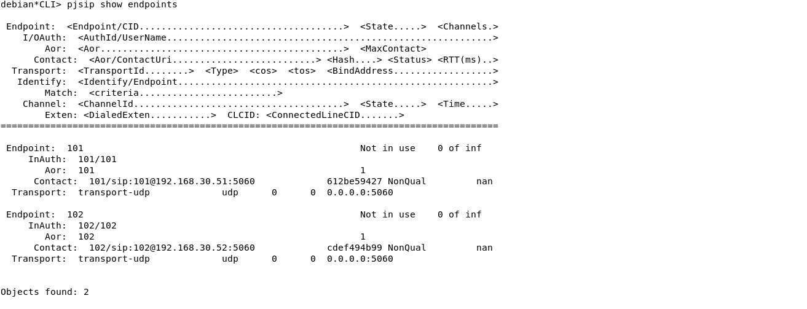
Figure 10: Final Acceptance Report — Network Diagnostics via the 'pjsip show endpoints' command
Plutôt que de déployer des solutions tierces lourdes, l'équipe a programmé **ses propres sondes en Bash** couplées à une architecture asynchrone AJAX via Fetch API, rafraîchissant l'interface d'administration toutes les 2,5 secondes.
Pour assurer le stockage sécurisé des documents, nous avons déployé un serveur de fichiers via **Samba** avec chiffrement obligatoire **SMBv3** au sein de notre fichier smb.conf.
Le cloisonnement logique capacitaire est géré via le module de gestion de fichiers `ext4` de Linux avec l'outil de quotas unitaires, imposant un blocage matériel dur de **10 Go** par utilisateur (Finance / RH).
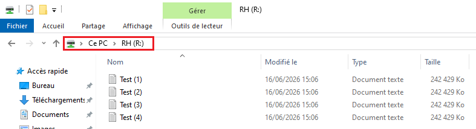
Figure 11 : Maintien de l'espace de stockage RH (R:) malgré la saturation complète du volume Finance
La continuité d'activité de l'infrastructure Patapied s'articule autour de deux mécanismes de sauvegarde asynchrones centralisés vers le répertoire `/var/backups/patapied` de notre Debian :
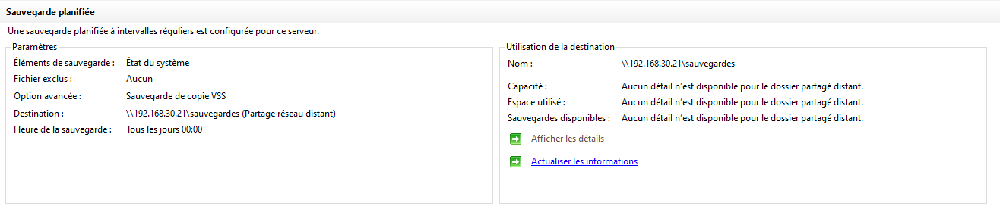
Figure 12 : Enregistrement et validation finale de la tâche de sauvegarde d'état système AD